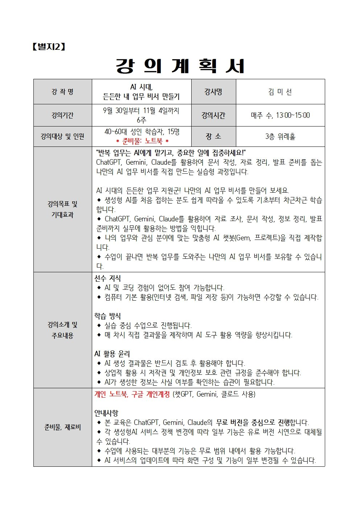
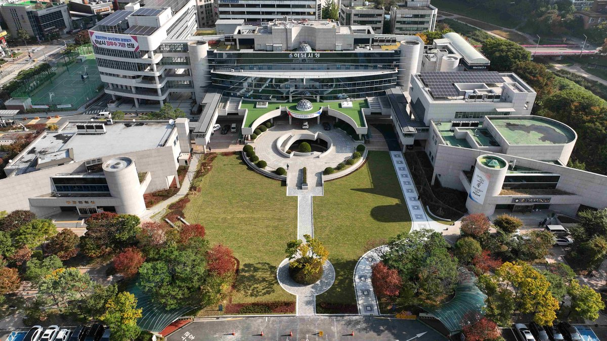

72호 | 2026년 11월 4일 발행
📌 이번 호 주요 목차
 우리동네 국회의원 이광재
우리동네 국회의원 이광재
📝 현장일지
이광재의원, "아빠 찬스·엄마 찬스 아닌 '국가 찬스'의 시대를 열어야 합니다"
• 국회에서 동료 의원 8명과 '국가수저 프로젝트: 돈을 쓰는 국가에서 버는 국가로' 정책토론회 개최
• 국부펀드를 활용한 '국민 인생계좌' 제안, 아이가 태어나면 국가가 1억 원 투자
• 연 7% 수익 가정 시 스무 살에 약 3억 8,700만 원, 1억 원은 학비·창업·주거에 쓰고 나머지는 노후까지 운용
• AI 시대 자본소득이 커지는 만큼 누구나 '국가수저'를 갖게 하자는 취지
• 재원 마련·투자 위험 등 실현 방안을 논의하고 구체적 해법 마련 다짐
• 국부펀드를 활용한 '국민 인생계좌' 제안, 아이가 태어나면 국가가 1억 원 투자
• 연 7% 수익 가정 시 스무 살에 약 3억 8,700만 원, 1억 원은 학비·창업·주거에 쓰고 나머지는 노후까지 운용
• AI 시대 자본소득이 커지는 만큼 누구나 '국가수저'를 갖게 하자는 취지
• 재원 마련·투자 위험 등 실현 방안을 논의하고 구체적 해법 마련 다짐
📌 출처: 이광재 공식 네이버 블로그
📰 언론보도
[남도일보] 이광재의원 "태어나면 1억 원 종잣돈"… '국가수저 프로젝트' 시동
국회 예산결산특별위원장인 이광재 의원이 2일 국회 의원회관에서 여당 의원 8명과 '국가수저 프로젝트' 정책토론회를 열고 국민자산펀드(가칭) 도입을 제안했습니다. 신생아 1명당 1억 원을 국부펀드 방식으로 연 7% 운용해 20세에 1억 원은 학비·창업·주거에 쓰고, 나머지는 65세까지 불려 노후자금으로 쓰는 구상입니다. 연간 출생아 25만 명 기준 초기 재원은 25조 원으로 국가 예산의 약 3%입니다. 이 의원은 "아빠 찬스, 엄마 찬스가 아니라 국가 찬스의 시대를 열어야 한다"고 강조했습니다.
📌 출처: 남도일보 (임소연 기자)
📰 언론보도
[전기신문] 이광재의원 "2027년 예산안, 지출 규모보다 국민 삶의 성과로 평가해야"
국회예산정책처가 2일 국회의원회관에서 '2027년도 예산안 토론회'를 열었습니다. 국회 예산결산특별위원장인 이광재 의원은 "2027년도 예산안은 지출 규모보다 국민 삶에 미치는 성과 중심으로 평가해야 한다"며 "불용·이월 사업을 점검하고 AI·첨단산업 등 미래투자를 뒷받침하겠다"고 강조했습니다. 조정식 국회의장은 민생 회복과 미래 성장동력 투자를 뒷받침하되 예산안을 법정기한 안에 처리하겠다고 밝혔고, 여야 간사와 학계도 심사 방향에 대한 의견을 냈습니다.
📌 출처: 전기신문 (송세준 기자)
📰 하남 지역 주요 뉴스
📚 시의회
"공공 도서관은 모든 아이에게 열려 있어야"… 오승철 시의원, 어린이영어도서관 영어 전용 전환·공원 관통 진입로 지적
하남시의회 오승철 자치행정위원장(미사3동·덕풍3동)이 행정사무감사에서 개관을 앞둔 하남시 어린이영어도서관의 영어 전용 전환과 공원 관통 진입로 개설을 지적했습니다. 2020년 어린이도서관으로 계획됐다가 영어 전용으로 바뀌는 과정에서 의회 보고와 주민 의견 수렴이 없었다는 것입니다. 오 위원장은 한 층은 일반 어린이 도서, 다른 층은 영어 특화 공간으로 나누자고 제안했습니다. 미사호수공원 보행로를 바꾼 약 100m 일방통행 진입로가 공원을 둘로 가르고, 주차면도 19면에 그친다고 꼬집었습니다.
📌 출처: 아리하남 투데이광주하남 (이규웅 기자)
🚸 교통
하남시, 횡단보도 신설·노상주차장 16면 조성… 감일 어린이보호구역은 '시간제 속도제한'
하남시가 지난달 27일 교통안전시설 심의에서 22건 중 18건을 승인받아 어린이 통학로·복지시설·주거밀집지역 등 7개 사업을 먼저 추진합니다. 미사1동 어린이영어도서관과 어린이교통공원 사이에는 이달 안에 횡단보도와 보행신호등이 생기고, 미사노인복지관 인근 교차로에는 유턴차로가 만들어집니다. 시청 인근에는 노상주차장 16면이, 덕풍현대·쌍용예가아파트 근처에는 건널목이 추가됩니다. 감일 어린이보호구역 5곳은 평일 오후 8시~다음 날 오전 8시에만 제한속도를 시속 40㎞로 높입니다.
📌 출처: 문화일보 (박성훈 기자)
💬 하남 맘카페 HOT 이슈
이번 주 하남 지역 맘카페(미사맘스클럽, 하남에듀4050, 슬기로운 위례생활, 교산라이프 등)에서 많이 오르내린 HOT 이슈 TOP 3입니다.
1️⃣ [수능] "고3 된 게 엊그제 같은데 보름 남았네요"… 11월 19일 수능 앞두고 응원·정보 나눔 활발
현황: 2027학년도 대학수학능력시험(11월 19일·목)이 2주 앞으로 다가오면서 하남 교육 카페에 수험생 가족의 글이 늘었습니다. "고3 된 게 엊그제 같은데 이제 보름 정도 남았다, 날짜를 세면 긴장될까 봐 평소처럼 지낸다"는 글에 응원 댓글이 이어졌고, 양평 용문사 은행나무에 걸린 '수능 대박' 소원지를 보고 뭉클했다는 사연도 올라왔습니다. 미사맘스클럽에는 수험생에게 선물할 '수능 마카롱'을 파는 곳을 묻는 글이, 교육 카페에는 교시별 준비물과 영어 듣기 중 돌발 상황 대처법을 정리한 '수능 당일 가이드'가 공유됐습니다.
💡 주민 포인트: 수능 당일 아침에는 수험생 입실 시간(오전 8시 10분까지)에 맞춰 시험장 주변이 붐비니, 출근길 차량은 시험장 인근을 피하고 대중교통을 이용해 주세요. 영어 듣기평가 시간에는 시험장 주변 경적·공사 소음을 자제하는 것이 좋습니다. 지난해 하남에서는 미사강변고·미사고·하남고·풍산고·신장고 등이 시험장으로 운영됐습니다.
💬 주민 반응: '수능 대박'을 비는 응원 댓글이 줄을 이었고, 중2·중3 자녀를 둔 부모들은 고교 입학설명회와 겨울방학 준비 정보를 나누며 미리 대비하는 분위기였습니다.
📌 출처: 네이버 카페 (하남미사교산4050 중고등 대입 교육, 미사강변도시 미사맘스클럽, 하남 미사맘 클라스)
2️⃣ [교통] "97% 지어 놓고 또 연기라니"… 위례선 트램 개통 내년으로, 위례 맘들 '허탈'
현황: 서울시가 지난달 28일 올해 12월로 예정했던 위례선 트램 개통을 내년으로 미룬다고 밝히자 위례 카페가 들끓었습니다. "97% 지어 놓고 이제 와서 안전심의 이견이라니, 민원을 넣어 개통일을 정하라고 항의하고 싶다"는 글에 공감이 이어졌고, "아이들 학원 때문에라도 편하게 이동하고 싶었는데 은하철도 999 타는 게 빠르겠다"는 하소연도 나왔습니다. 트램 안에 교복 입은 학생들이 타고 있는 걸 봤다며 이미 개통한 것 아니냐는 질문, 정확한 개통 시기를 묻는 글도 잇따랐습니다. 마천역(5호선)과 복정역·남위례역(8호선)을 잇는 위례선은 개통 목표가 2025년 9월에서 세 차례나 밀렸습니다.
💡 주민 포인트: 서울시는 내년 3월까지 안전진단과 시설 검증을 마치고 서울경찰청 교통안전 심의를 거쳐, 내년 상반기 중 확정된 개통 일정을 발표할 계획입니다. 개통 전까지는 기존 버스·지하철 노선을 이용해야 하니, 아이 통학·학원 동선은 지금 노선 기준으로 계획해 두세요.
💬 주민 반응: "안전이 최우선인 건 맞다"는 의견도 있었지만, 서울시와 경찰이 이견을 빨리 좁혀 개통일을 못 박아 달라는 목소리가 많았습니다.
📌 출처: 네이버 카페 (슬기로운 위례생활, 위례맘속에(愛), 송파맘♥위례맘홀릭, 위례에서 공부하기)
3️⃣ [교육] "한 학년 13반인데 비평준화라니"… 중학교 과밀·초등 통학구역 변경안에 학부모 관심 집중
현황: 미사맘스클럽에는 "초등학교가 한 학년 13반까지 있는데 중학교 진학을 앞두고 보니 5개 학교 중 3곳이 과밀이고, 가지원 단계에서 이미 정원을 넘었다"며 학생 수를 학교 여건이 따라가지 못한다는 글이 올라왔습니다. 교산 카페에는 광주하남교육지원청이 2027학년도 하남 초등학교 통학구역 설정안을 발표했다는 소식이 공유돼, 거주지별 배정 학교가 바뀌는지 확인하는 댓글이 이어졌습니다. 위례 카페에서는 하남교육지원청 독립 신설이 확정되고 개청 목표가 2028년 3월에서 2027년 9월로 6개월 당겨졌다는 소식이 반가운 반응을 얻었습니다.
💡 주민 포인트: 2027학년도 초등학교 통학구역(안)은 광주하남교육지원청 누리집에서 확인할 수 있습니다. 우리 집 주소가 어느 학교에 배정되는지 미리 살펴보고, 의견 수렴 기간이 있는지도 함께 확인해 두세요.
💬 주민 반응: "하남교육지원청이 생기면 과밀 문제를 더 빨리 풀 수 있을 것"이라는 기대와 함께, 중학교 신설과 학급 증설을 서둘러 달라는 목소리가 많았습니다.
📌 출처: 네이버 카페 (미사강변도시 미사맘스클럽, 교산라이프, 송파맘♥위례맘홀릭)
🎭 ALL IN 하남라이프
2026년 11월 4일 기준 한눈에 보는 하남시 최신 문화·행사·교육 안내 가이드
🧁 11.23(월) | 하남시가족센터 · 접수 ~11.11(수) 20:00 · 무료
[가족센터] 1개는 나에게, 2개는 이웃 아이들에게… '우리의 케꾸(케이크 꾸미기) 만들기'
"직접 만든 컵케이크로 사랑의 마음을 전해요"
하남시가족센터 다목적가족소통교류공간이 연말 프로그램 참여자를 모집합니다. PET 원형용기를 스티커로 꾸미고 머핀·도넛·쿠키 등으로 컵케이크 3개를 만들어, 1개는 내가 갖고 2개는 지역사회 아동에게 나눕니다.
🗓 일시: 2026년 11월 23일(월) 1차 10:30~11:30 / 2차 14:30~15:30 중 택1
📍 장소: 하남시가족센터 1층 다목적가족소통교류공간 (신장동로 15)
👥 대상: 하남시 거주 성인 25명 (회차별 최대 15명, 신규 참여자 우선)
💰 비용: 무료 (교육비·재료비 없음)
✍️ 신청: 11월 11일(수) 20시까지 네이버 폼(홍보지 QR) · 11.12(목) 14시 이후 개별 전화 안내
☎️ 문의: 하남시가족센터 031-793-2993
하남시가족센터 다목적가족소통교류공간이 연말 프로그램 참여자를 모집합니다. PET 원형용기를 스티커로 꾸미고 머핀·도넛·쿠키 등으로 컵케이크 3개를 만들어, 1개는 내가 갖고 2개는 지역사회 아동에게 나눕니다.
🗓 일시: 2026년 11월 23일(월) 1차 10:30~11:30 / 2차 14:30~15:30 중 택1
📍 장소: 하남시가족센터 1층 다목적가족소통교류공간 (신장동로 15)
👥 대상: 하남시 거주 성인 25명 (회차별 최대 15명, 신규 참여자 우선)
💰 비용: 무료 (교육비·재료비 없음)
✍️ 신청: 11월 11일(수) 20시까지 네이버 폼(홍보지 QR) · 11.12(목) 14시 이후 개별 전화 안내
☎️ 문의: 하남시가족센터 031-793-2993
📌 출처: 하남시가족센터 (다목적가족소통교류공간)
💻 매주 수 13:00~15:00 | 위례도서관 3층 위례홀 · 11.4(수) 마지막 강의 (접수 마감)
[위례도서관] "반복 업무는 AI에게"… ChatGPT·Gemini·Claude로 나만의 AI 업무 비서 만들기
"AI가 처음이어도 따라 할 수 있는 실습형 6주 과정"
위례도서관 문화강좌 'AI 시대, 든든한 내 업무 비서 만들기'가 오늘(11월 4일) 6회차 수업으로 마무리됩니다. ChatGPT·Gemini·Claude 무료 버전으로 문서 작성, 자료 정리, 발표 준비를 돕는 맞춤형 AI 챗봇을 직접 만드는 과정입니다.
🗓 기간: 2026.9.30.~11.4. 매주 수 13:00~15:00 (6회)
📍 장소: 위례도서관 3층 위례홀
👥 대상: 성인 15명 (40~60대 학습자)
👩🏫 강사: 김미선 (AI 및 코딩 지도사)
📖 내용: 프롬프트 기초 → Gemini Gem 비서 만들기 → Claude 프로젝트로 회의록·보고서·PPT 초안 자동화 → SUNO AI 음악 만들기
🎒 준비물: 개인 노트북, 구글 개인계정 · 도서관 주차 1시간 무료
✅ 접수: 8.19~9.30 (마감) · 다음 강좌는 하남시립도서관 '독서문화프로그램 신청'에서 확인
위례도서관 문화강좌 'AI 시대, 든든한 내 업무 비서 만들기'가 오늘(11월 4일) 6회차 수업으로 마무리됩니다. ChatGPT·Gemini·Claude 무료 버전으로 문서 작성, 자료 정리, 발표 준비를 돕는 맞춤형 AI 챗봇을 직접 만드는 과정입니다.
🗓 기간: 2026.9.30.~11.4. 매주 수 13:00~15:00 (6회)
📍 장소: 위례도서관 3층 위례홀
👥 대상: 성인 15명 (40~60대 학습자)
👩🏫 강사: 김미선 (AI 및 코딩 지도사)
📖 내용: 프롬프트 기초 → Gemini Gem 비서 만들기 → Claude 프로젝트로 회의록·보고서·PPT 초안 자동화 → SUNO AI 음악 만들기
🎒 준비물: 개인 노트북, 구글 개인계정 · 도서관 주차 1시간 무료
✅ 접수: 8.19~9.30 (마감) · 다음 강좌는 하남시립도서관 '독서문화프로그램 신청'에서 확인

📌 출처: 하남시립 위례도서관 (문화강좌)
🏛️ 공공기관 소식지
2026년 11월 4일 기준 하남시 공공기관 주요 공고·신청 안내입니다.
🏠 하남시 토지정보과 | 이의신청 ~ 11.27(금)
하남시, 7월 1일 기준 개별공시지가 278필지 결정·공시 — 11월 27일까지 이의신청
"우리 땅 공시지가, 확인하고 이의신청하세요"
하남시가 올해 1~6월 분할·합병·지목변경 등 토지이동이 생긴 278필지의 7월 1일 기준 개별공시지가를 10월 29일 결정·공시했습니다.
🔎 확인: 부동산공시가격알리미(www.realtyprice.kr), 하남시청 토지정보과 방문·전화
📝 이의신청: 11월 27일(금)까지 · 토지정보과 직접 제출, 부동산공시가격알리미 온라인, 우편·팩스(031-790-6159)
⚖️ 처리: 재조사·감정평가법인 검증·부동산가격공시위원회 심의를 거쳐 12월 21일 최종 확정
☎️ 문의: 토지정보과 031-790-6151
하남시가 올해 1~6월 분할·합병·지목변경 등 토지이동이 생긴 278필지의 7월 1일 기준 개별공시지가를 10월 29일 결정·공시했습니다.
🔎 확인: 부동산공시가격알리미(www.realtyprice.kr), 하남시청 토지정보과 방문·전화
📝 이의신청: 11월 27일(금)까지 · 토지정보과 직접 제출, 부동산공시가격알리미 온라인, 우편·팩스(031-790-6159)
⚖️ 처리: 재조사·감정평가법인 검증·부동산가격공시위원회 심의를 거쳐 12월 21일 최종 확정
☎️ 문의: 토지정보과 031-790-6151

📌 출처: 하남시 (토지정보과)
⚽ 하남시 체육진흥과 | 11.9(월) ~ 11.27(금) 신청
2027년 스포츠강좌이용권 신청 — 5~18세 유·청소년에 매달 10만 5천 원 수강료 지원
"아이들의 운동, 수강료 걱정 덜어 드려요"
문화체육관광부·국민체육진흥공단이 유·청소년의 스포츠강좌 수강료를 지원하는 2027년 스포츠강좌이용권 신청을 전국에서 동시에 받습니다.
✅ 대상: 2009.1.1.~2022.12.31. 출생 5~18세 중 생계·의료·주거·교육급여 수급가구, 차상위계층, 법정 한부모가족 등
💰 지원: 1인당 월 10만 5천 원 내 수강료 (2027년 1~12월, 최대 12개월)
🗓 신청: 2026년 11월 9일(월) ~ 11월 27일(금) · 선착순 아님, 12월 중 선정자 개별 통보
💻 방법: 스포츠강좌이용권 홈페이지(svoucher.kspo.or.kr) 온라인 또는 주소지 행정복지센터 방문 신청
⚠️ 유의: 올해 지원받은 아이도 내년 지원을 받으려면 다시 신청해야 합니다.
☎️ 문의: 콜센터 1551-0078 · 체육진흥과 031-790-5834
문화체육관광부·국민체육진흥공단이 유·청소년의 스포츠강좌 수강료를 지원하는 2027년 스포츠강좌이용권 신청을 전국에서 동시에 받습니다.
✅ 대상: 2009.1.1.~2022.12.31. 출생 5~18세 중 생계·의료·주거·교육급여 수급가구, 차상위계층, 법정 한부모가족 등
💰 지원: 1인당 월 10만 5천 원 내 수강료 (2027년 1~12월, 최대 12개월)
🗓 신청: 2026년 11월 9일(월) ~ 11월 27일(금) · 선착순 아님, 12월 중 선정자 개별 통보
💻 방법: 스포츠강좌이용권 홈페이지(svoucher.kspo.or.kr) 온라인 또는 주소지 행정복지센터 방문 신청
⚠️ 유의: 올해 지원받은 아이도 내년 지원을 받으려면 다시 신청해야 합니다.
☎️ 문의: 콜센터 1551-0078 · 체육진흥과 031-790-5834
📌 출처: 하남시 (체육진흥과)
© 2026 우리동네 진짜일꾼 이광재